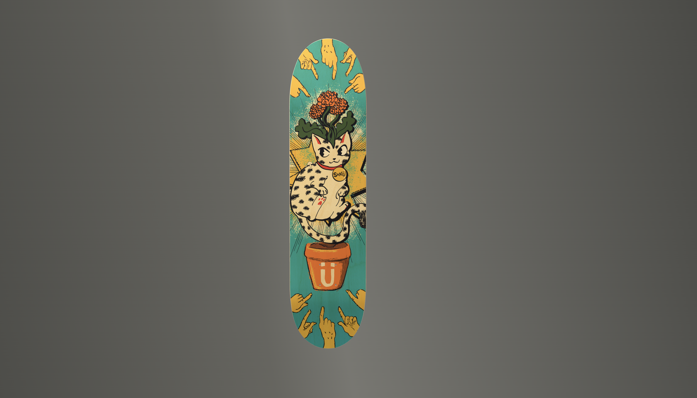
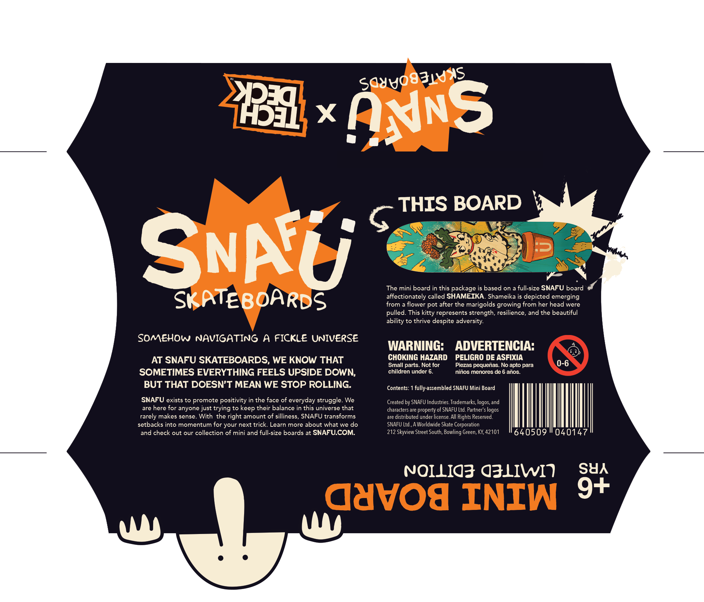

Branding · Illustration · ART 430
SNAFU Skateboards
SNAFU (Somehow Navigating A Fickle Universe) is a fictional skateboarding brand built around humor, individuality and resilience. Inspired by the spirit of the iconic Kilroy doodle of WWII, the project combines expressive illustrations, graphics, and branding to create a distinctive visual identity.
Project overview
SNAFU Skateboards explores how a brand can use humor in its design to create a recognizable personality. The identity takes inspiration from the idea of finding your way through an unpredictable world without taking everything too seriously.
Creative direction
The visual direction draws from the acronym SNAFU and Kilroy, both originating from WWII. The brand uses informal illustration and bright, expressive graphics to establish the brand's personality.
Character illustration
SHAMEIKA brings the brand's themes of resilience and individuality into a character-driven illustration. The design features a cat emerging from a flower pot after the marigolds growing from her head have been pulled.

Final designs
The finished work applies the identity across skateboard artwork and custom packaging, bringing the illustrations and visual language together in a cohesive skateboard brand.
